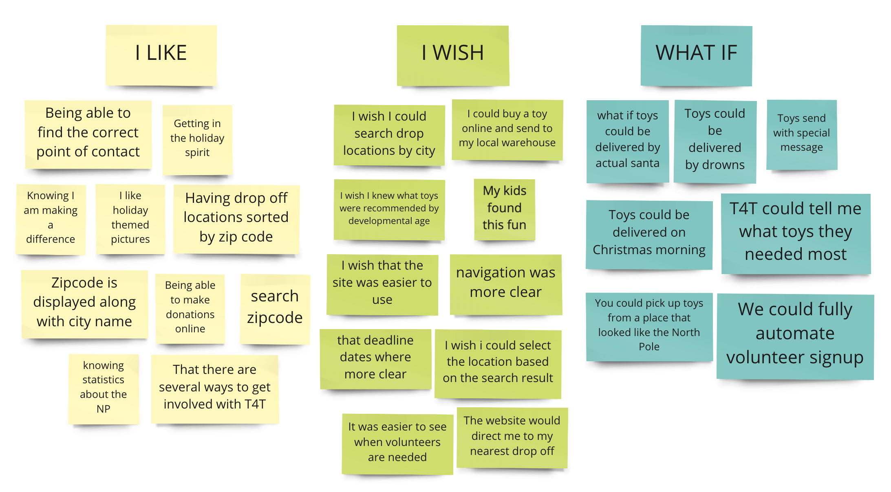
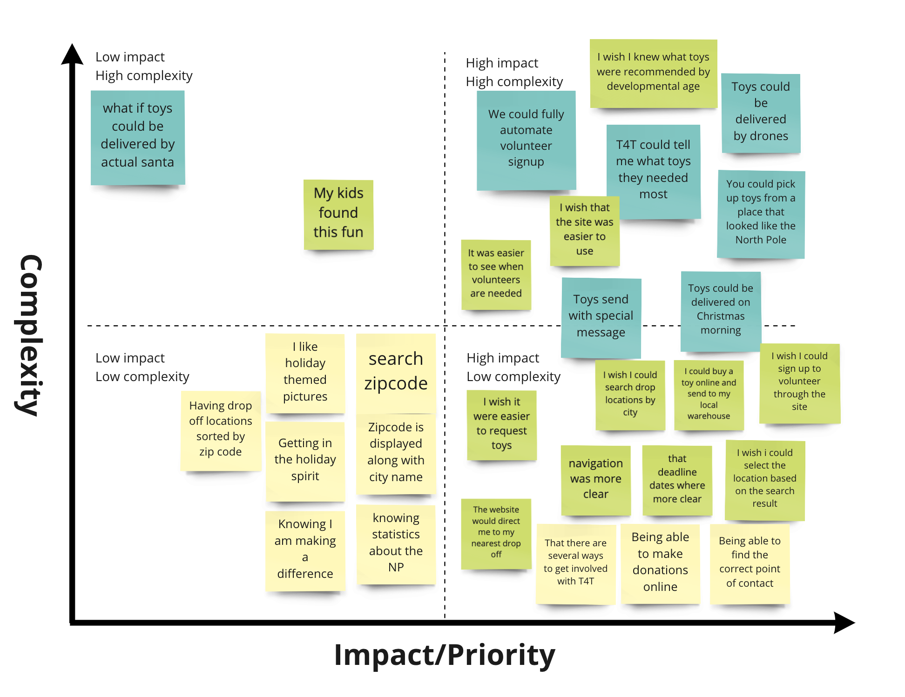
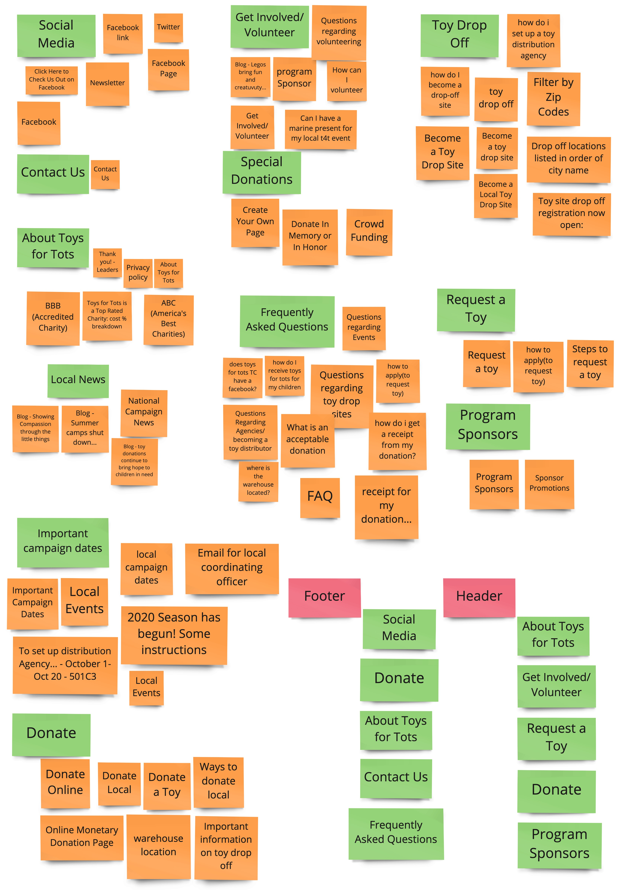
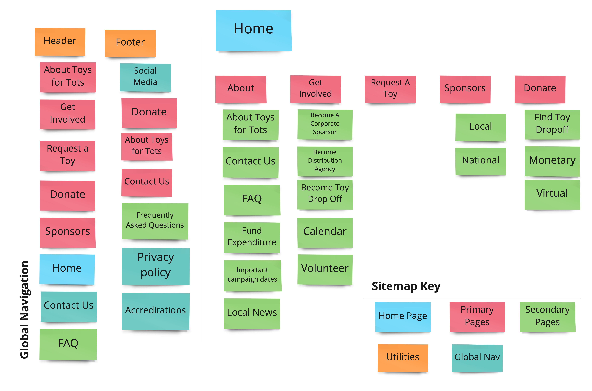

Process
Create a Protopersona
It is important to understand who it is you are designing for. This is what sets us apart as UX Designers. For this project, we decided to design keeping a working hockey-mom in mind. Someone with children of her own, a busy schedule, and little time to spare.
Affinity Diagram
User Insignt
A suburban hockey mom wants to teach her children about generosity and giving back to their community through working with local nonprofits during the holiday season, because she wants them to understand that the holidays are more than Christmas lights and presents under the Christmas tree.
Create an Empathy Map
Expanding off of our previously created protopersona, and the key findings from our research, the team brainstormed more personal information to better connect with our user and to help offer the most effective solutions.

Problem Statement
The Toys for Tots website was built to share information about their annual toy drive and help organize volunteers. We observed that the website was lacking in accessible functionality and festive cheer. How might we improve the digital experience to help bolster toy donations and volunteer efforts for this non-profit?

UX Hypothesis
If the Toys for Tot's website offered a clearer way to find donation locations, virtual toy donation, and resources for volunteers, we believe their annual toy drives would be more successful.
Value Proposition
Next we defined why the work we were doing with the redesign was worth stakeholder time and what benefits and solutions our redesign would offer. We decided on building these features:
- Location Finder
- Forms Contact Us Page
- Monetary Donation Page
- Automated volunteer Portal
Card Sorting & Sitemap
Now that we know what we want to build, it's time to decide where it will live on the site. To determine this we completed card sorting on the existing page to make sure we kept all necessary information and to help organize it better. (If you can recall, the navigation being confusing was a key finding from our research phase)
 User Flow
Previously, we narrowed down what features we could offer, next we mapped out the user flows we intended to build:
- Toy Dropoff Locations
- Monetary Donation
- Volunteer Signup Process
- Contact Us Form
Wire Frames
With four designers and four different userflows to create, where do you start?
We started by everyone wireframing a home page and then combining the ideas to solidify the general look and feel of the website

Next we each chose a path and completed both a mobile and desktop wireframe for that section. I was assigned the volunteer portal.
Overview
words words words
Overview
words words words
Overview
words words words